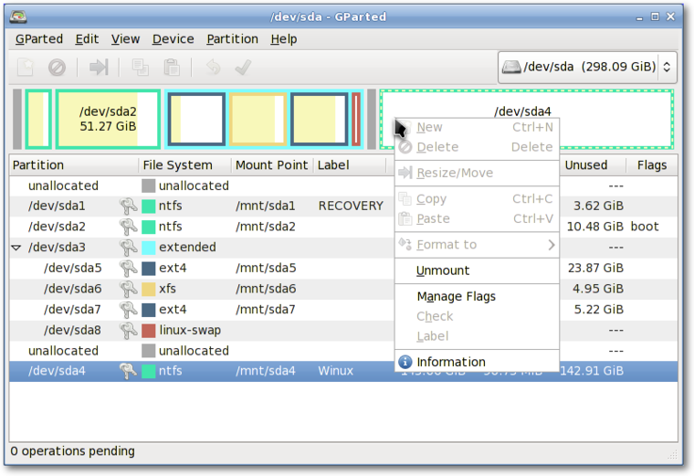

Before installing Salix, you need to have the necessary partition
space available on your system, and if the computer does not have a
separate partition for Linux, you must create one before installing
Salix.
If you have an unformatted partition, unallocated disk space, an
existing partition you do not use, or you are happy to completely erase
and reformat your hard drive, you can create or rewrite a new partition
table using cfdisk (or cgdisk for EFI systems), which is
available through the Salix installer. A short
tutorial on using cfdisk is available in a later section in this
guide. cfdisk and cgdisk are capable of removing and
creating partitions, but they lack the functionality to resize
partitions. While using cfdisk or cgdisk is easy, less
experienced users may prefer the safeguards and graphical interface of
Gparted, which can also resize and move partitions.

Live CDs from pretty much any Linux distribution come with
Gparted, which will enable you to change the partition organisation
on a disk device while preserving the contents of the partitions. You
may wish to use this application to create/re-organise your partition
table.
A hard drive space can be divided into no more than four "primary"
partitions, which can be problematic if you are hosting more than one
operating system on the same hard drive. A hard drive can, however, be
divided into three "primary" partitions and one "extended" partition.
The extended partition can then be subdivided into "logical" partitions
and hence overcome the limitation set by the "primary partition" (i.e.
no more than four partitions). In practice, there is no difference
between a logical and a primary partition except that "Windows" OS
cannot be installed on a logical partition.
It is advisable to back
up any important files before modifying the partition table.
2.2.2.1. So what kind of partitions do you need?
- Salix needs, at the very minimum, one partition which holds the root
directory and must be assigned as
/.
- It is often recommended to have one swap partition though modern RAM
sizes now often mean it isn't needed. If you already have another Linux
OS running on your machine, its swap partition can be shared, and you
do not need to create another. A swap partition is in essence used as
extra RAM to improve the performance of your machine when, for example,
your machine doesn't have a lot of physical RAM or you're performing
memory-intensive operations (such as video editing) that use up most or
all of the physical RAM. It is normally recommended to have 1.5-2 times
the size of your RAM as swap space, but for a modern desktop computer
with several GB of RAM, a swap partition may not be strictly necessary.
- Many users like to have a separate partition to hold the /home
directory, where you can store all your personal data such as
documents, photos, customised settings for the desktop environment etc;
but this is by no means necessary.
- Optionally you can create separate partitions to hold different
directories such as the /var directory, where system log files are
stored. But unless you are running a server machine, this is probably
unnecessary. An advantage of having more than one partition to hold
separate directories is that you can reformat one partition without
affecting others. For example, you can re-install Salix on your machine
(this goes to the partition holding the "/" directory) while leaving
the partition holding the /home directory intact; however, be aware
that /home can contain configuration specific to each distribution and
release, so sharing it between distros or reusing it when installing a
new version of Salix is liable to lead to problems.
Each partition can be formatted into one of several file systems,
including xfs, ext4, ext3, ext2, btrfs, jfs and reiserfs. The default
is xfs.
On (U)EFI systems, it is mandatory
to have a separate partition allocated for /boot. This partition
should have a type of ef00, when created in cgdisk. This
partition should be formatted using the FAT32 filesystem.